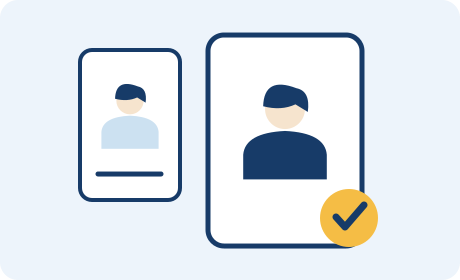

更新情報・公式ニュース
公式情報の確認日 2026-11-22
最近参加した現役生
サービス・料金
出願準備・語学学習・大学生活・住居探し。
それぞれの現役学生が経験したポーランド留学について、開設後にZoomやLINEで相談できます。
オンラインZoom面談
25 USD
約3,800円
1回40分
出願や現地生活の疑問を、現役学生と直接話して整理できます。
現役生LINE相談
お試し10日間
5,000円
通常30日間
15,000円
現役学生1名と、期間中LINEでじっくり相談できます。
Zoom面談の円換算額は、為替レートやカード会社によって変わります。
開設準備中のため、現在はZoom・LINEとも予約・申込を受け付けていません。
相談の流れ（かんたん3ステップ）

現役生を選ぶ大学・専攻・経歴と相談できるテーマを見て、自分の疑問に合う相手を選びます。- 相談方法・日時を決めるZoomは日時を予約。LINEは期間・開始日を確認。料金・支払方法・変更条件に同意して申し込みます。
- 経験を聞き、準備を進める出願・語学・授業・住居などの疑問を相談。聞いた経験を、公式情報と合わせて準備に活かします。
相談受付開始後の流れです。
ポーランド留学の全体像


ポーランドの大学ガイド
英語課程、出願資格・選考、日程、学費、住まいを大学ごとに確認できます。
ポーランドの地図から大学を探す


ポーランドの大学ランキング
総合順位に加え、専攻別の結果も確認できます。ランキングの年度と評価方法をそろえて比較し、授業言語・学費・出願条件は各大学の募集要項で確認してください。
現役生コラム・動画
ポーランドでの授業や生活、留学準備の体験談を掲載する予定です。
ポーランド留学を経験した学生

代表運営者
ユユカ（yuyuka）
ヤギェウォ大学（クラクフ）での留学経験
International Relations and Public Diplomacy（修士・ダブルディグリー）
プロフィール
日本の大学卒業後、ポーランドのJagiellonian Universityへ進学(Double Degree)し、International Relations and Public Diplomacy(MA)を専攻しています。出願では英語要件（IELTS）、志望理由書などの書類を経験しており、合格をいただくまでの具体的な流れについてお話しできます。また、ポーランドとオランダへの留学経験もあり、全ての留学において奨学金をいただくことができました。実際にいただいた奨学金や取得までの道のり、生活費、学生生活や治安などあらゆるご相談に対応可能です。
相談できる内容・得意分野
奨学金、生活費、住居探し、大学生活、他国との比較（オランダ、ポーランドへの留学経験あり）
ポーランド留学ラボの相談受付は準備中です。
Sara
ヤギェウォ大学（Jagiellonian University）
European Studies（学士）
プロフィール
ポーランドのヤギェヴォ大学の1年生です。まだ留学初心者ですが、何卒よろしくお願いします。
相談できる内容・得意分野
ポーランドの大学選び・出願、英語やポーランド語の学習、生活費、住まい探し、大学生活、入学試験対策
ポーランド留学ラボの相談受付は準備中です。
Nanako
ヤギェウォ大学（修士1年目）
シエナ大学（修士2年目）
International Relations and Public Diplomacy（修士・ダブルディグリー）
プロフィール
日本の大学卒業後、ダブルディグリープログラムでヨーロッパの大学院に進学しました。修士１年目はポーランドのJagiellonian University 、2年目はイタリアのUniversity of Sienaで国際関係学を学んでいます。4年生の春頃まで就活をしており、内定を辞退してから出願準備をし始めました。奨学金やオンライン面接対策、研究計画書やMotivation Letterの書き方等、共有できれば幸いです。
相談できる内容・得意分野
ポーランド大学院事情
奨学金（NAWA、日本国内）
研究計画書（日英）、Motivation Letterの書き方等
ポーランド留学ラボの相談受付は準備中です。
Tomoki
SGHワルシャワ経済大学
Global Business, Finance and Governance（修士）
プロフィール
はじめまして、こうちともきと申します。千葉県出身で、現在はポーランドのワルシャワにあるSGHワルシャワ経済大学の大学院に通っています。
高校までは日本の公立学校に通い、大学はアメリカ・ペンシルベニア州の大学に進学して2025年12月に卒業しました。在学中にはイタリアの大学へ一学期間の交換留学も経験し、日本・アメリカ・イタリア・ポーランドと4カ国で学んできました。
イタリア留学中にヨーロッパを10カ国ほど旅行して魅了され、その後も毎年訪れるように。訪れた国々の中でポーランドが自分に一番合っていると感じ、進学を決めました。欧米に比べて学費が比較的抑えられる点も理由の一つです。
長年英語で授業を受けてきたので、英語での授業の受け方や効率的な勉強法についても、実体験に基づいてお伝えできます。また、ポーランドでの住まいの探し方についても、自分の経験をもとに手伝うことができます。
相談できる内容・得意分野
英語で授業を受けるための準備、効率的な勉強法、ポーランドでの住まい探し
ポーランド留学ラボの相談受付は準備中です。
よくある質問（FAQ）
留学エージェントや無料相談と何が違うのですか？
ポーランドの大学で学ぶ学生自身の出願・授業・生活の経験を聞けるサービスです。手続きの代行や書類添削は扱っていません。
まだ出願するか決めていませんが、相談しても大丈夫ですか？
出願するか迷っている段階でも、開設後は相談できます。学費、大学選び、英語で学ぶ生活など、気になる点から相談できます。
どの現役生が対応するか選べますか？
現役生一覧で大学、専攻、相談テーマを確認できます。開設後の相談相手はプロフィールから選べます。
面談ではどんなことを相談できますか？
大学・専攻選び、出願準備、語学、授業、生活費、住まいなどです。各現役生のプロフィールに相談できる分野を記載しています。
医学部の相談はできますか？
医学部の体験相談は、担当できる現役生がプロフィール一覧に掲載された時点で案内します。大学一覧では医学系の大学も探せます。
なぜ有料なのですか？
現役生が相談の準備と対応に時間を確保できるよう、相談は有料です。料金はサービス・料金欄に掲載しています。
なぜ料金がドル（USD）表記なのですか？
Zoom面談の掲載価格は25 USDです。円換算は為替レートやカード会社によって変わります。LINE相談は円で表示しています。
支払い方法は？
ポーランド版の相談受付は準備中です。支払い方法は受付開始時に案内します。
キャンセルや日程変更はできますか？返金はありますか？
ポーランド版の相談受付は準備中です。変更・キャンセル・返金の条件は受付開始時に案内します。
お問い合わせ・現役生登録
ポーランドの大学・大学院で正規留学中の方で、経験を志願者に届けたい方は運営までご連絡ください。提携・取材のお問い合わせも受け付けています。
留学ラボの運営へ問い合わせる